5. Entropy and the Second Law of Thermodynamics#
Relevant readings and preparation:
Concepts in Thermal Physics: Chapter 13 (13.1–13.3, 13.5), Chapter 14 (14.1–14.2, 14.5), Chapter 18
University Physics with Modern Physics 15th edition: Chapter 20 (20.1, 20.5, 20.7-20.8)
Introductory Statistics 2e: Chapter 1.1, 2.1 - 2.8, 3.1 - 3.3
Entropy video: https://www.youtube.com/watch?v=uQSoaiubuA0
Learning outcomes:
Distinguish reversible and irreversible thermodynamic processes
Relate macroscopic irreversibility to microscopic disorder
Define entropy from thermodynamic and statistical perspectives
Connect entropy with probability
5.1. Directions of Thermodynamic Processes#
Thermodynamic processes in nature are irreversible, meaning they occur spontaneously in one direction only. Examples include heat flowing from hot to cold, the free expansion of a gas, and the conversion of mechanical energy into heat by friction. These processes define a preferred direction in nature, formalized by the second law of thermodynamics.
By contrast, reversible processes are idealized limits in which the system remains infinitesimally close to thermodynamic equilibrium at all times. Such processes can be reversed by an infinitesimal change in external conditions, for example when heat flows between bodies with nearly equal temperatures. Perfect reversibility cannot be achieved in practice, but real processes can approach it if temperature and pressure differences are made very small. This will become increasingly relevant when dealing with entropy in reversible processes.
Irreversible processes are inherently nonequilibrium processes and cannot be made to run backward by small changes in conditions. Their direction is closely linked to increasing disorder: systems naturally evolve from more ordered states to more random ones. Mechanical energy represents organized motion, while heat corresponds to random molecular motion, so converting work into heat increases disorder and reinforces irreversibility.
{kind=link}
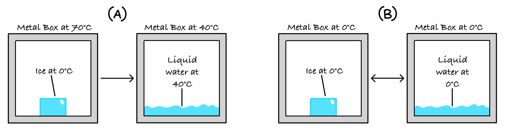
Fig. 5.1 (A) A block of ice melts irreversibly when we place it into a hot (70 \(^{\circ}\)C) metal box, as heat flows from the box into the ice - inducing a phase change into water. The heat will never move from the colder body to the hotter one. (B) A block of ice at 0\(^{\circ}\)C can be melted reversibly if we put it in a 0\(^{\circ}\)C metal box. By infinitesimally raising or lowering the temperature of the box, so that we remain extremely close to the phase transition temperature of H\(_2\)O, we can make heat flow into the ice to melt it; or make heat flow out of the water to freeze it.#
Examples will be provided once entropy is introduced. We will see that an irreversible process is characterized by a positive change in the entropy of the universe, whereas a reversible process corresponds to zero total entropy change.
5.2. Entropy and Probability#
Entropy \(S\) is a concept associated with disorder, randomness and uncertainty. In thermodynamics, a system has a definite value of entropy for every particular state of the system - i.e., it is a state variable (as in Section 1.4). As a brief reminder - pressure and temperature are also state variables; heat and work are not. We can define entropy either thermodynamically (“Clausius” entropy) or statistically (“Gibbs”/”Boltzmann” entropy).
Definition
Entropy is a measure of the uncertainty associated with a random variable.
If an outcome is highly unpredictable, its entropy is high, and its outcome is more likely to “surprise” you. Conversely, if an outcome is highly predictable, its entropy is low, and its outcome is less likely to “surprise” you.
To motivate the formalism of these definitions of entropy, we’ll first introduce entropy in the context of information theory, via the Shannon entropy:
where \(H\) is the weighted sum of surprises,
\(p_i\) is the probability (bounded by \((0, 1)\)) of an event \(i\),
and \(\log p_i\) quantifies the measurement or “surprise” of an event,
further, the logarithm base determines units like so:
\(\log_2\): “bits”,
\(\ln\): “nats”,
\(\log_{10}\): “bans”.
For an event with \(\Omega\) outcomes (specifically refers to states in the context of thermodynamics),
Why do we take the logarithm in (5.1)?
To represent our variable, we want a function \(f(p_i)\) where:
for zero surprise, \(f(p_i=1)=0\),
\(\log(p_i = 1) = 0\)
for small p: \(f(p_i)=\ \text{large}\),
\(\log(p_i \ll 1) = \text{large and negative}\)
and where independent events sum together:
conveniently, \(\log(a*b) = \log(a) + \log(b)\).
Example: Tossing a coin
What is the entropy in tossing an unfair coin (where both sides are heads)?
Since both sides are heads, the probability of an event’s outcome is simply:
\(p(H) = 1.0\),
\(p(T) = 0.0\). Seeing as we are certain of the outcome, we should expect \( S=0 \).
With 0 bits of entropy, we can see there is \(2^0=1\) modes.
What is the entropy in tossing a fair coin?
As above, but with different probabilities:
\(p(H) = p(T) = 0.5\).
With 1 bit of entropy, we can see there are \(2^1=2\) modes.
Example: Consecutive coin flips
What is the entropy in tossing a fair coin four times?
The probability of getting 4 heads in a row with a fair coin is \(P(4H)=2^{-4} = \frac{1}{16} = 6.25\% \) (least probable). The probability of getting 2 heads and 2 tails is \(P(2H, 2T) = \binom{4}{2}\cdot\frac{1}{4}^4= \frac{6}{16} = 37.5\%\) (most probable).
The number of microscopic states grow rapidly with increasing number of coins. For \(N=100\),
There is much greater entropy for 50 heads, 50 tails as there are many more combinations of microstates to describe the macrostate.
NB: \(\binom{n}{r} \equiv ^nC_r \equiv \frac{n!}{k!(n-k)!}\)
Connection to thermodynamic entropy (statistically)#
Now let’s consider how entropy is defined in thermodynamics where there are two forms:
Gibbs: Suppose a system can be in microcopic state \(i\) with probability \(p_i\):
where \(S\) measures the average surprise of the event,
\(k_B\) gives us our units for entropy,
and we operate exclusively with \(\ln\).
Boltzmann: Consider an isolated system (fixed energy, noninteracting surroundings, fixed volume, fixed number of particles) such that all microstates are equally likely as there are no external influences:
where \(S\) is the microscopic entropy,
and \(\Omega\) is the number of microstates for the given macroscopic state.
Large \(\Omega \to \) many possibilities \(\to\) large uncertainties \(\to\) large entropy
Small \(\Omega \to \) few possibilities \(\to\) small uncertainties \(\to\) small entropy
Statistical form of entropy#
Let us consider the entropy associated with an ideal gas containing Avagadro’s number of molecules in two states (A) and (B):
(A) has the gas being uniformly distributed,
(B) has the gas being clustered together, in a tenth of the volume.
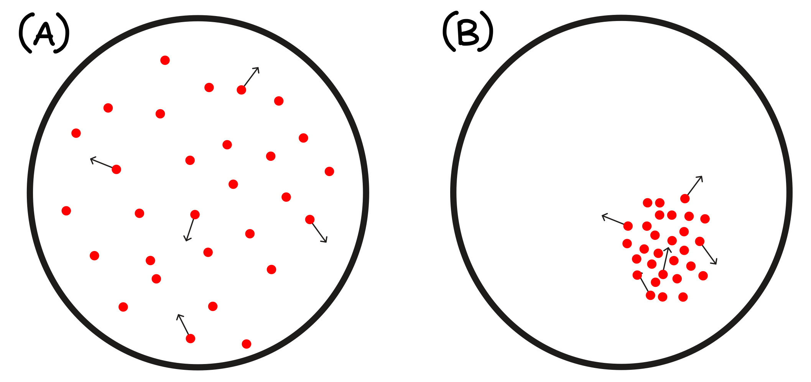
Their macroscopic states are described by the state variables \(T,\ p,\ V\).
Both of their microscopic states are equally likely, however the macroscopic properties of \(A\) and \(B\) are different.
(A) is more probable as there are more microscopic combinations of states that are able to describe the macrostate!
Let’s consider the case where the gas is composed of \(0.1 \text{mol} \to 6 \cdot 10^{22} \text{molecules}\).
Case (A) might have \( 10^{24} \) positions the molecules can occupy,
Since case (B) has the molecules clustered together in a tenth of the space, they’re restricted to a smaller subset of positions, \( 10^{23} \).
As in Section 1.8:
This is where entropy is considered a measure of disorder, as state (A) is more disordered than state (B). However we can see that the underlying reason is that (A) is more probable as there are more combinations of microscopic states that describe its macrostate.
Example
Consider the isothermal free expansion of a gas from \(V_1 \to V_2 = 2 V_1 \). What is the entropy change in this process?
Let’s start by denoting the number of molecules as \(N\) where each molecule has \(X\) different states it can occupy. We also know that the initial and final volumes are \(V_1\) and \(2V_1\).
This tells us the entropy for a given volume \(V\) with a given number of states, \(X^N\). So what is the entropy change when doubling the volume?
5.3. Probability: Introduction#
In thermal physics, we study systems containing a practically uncountable number of particles. Although individual atomic behaviour is largely unpredictable and tracking every motion and collision is unfeasible, the collective behaviour of large ensembles is remarkably regular. On macroscopic scales, measurable quantities such as temperature and pressure emerge as averages over many atomic contributions, and these averages follow well-defined probability distributions that allow us to model system behaviour without complete microscopic knowledge.
Before we delve into the basics of probability theory, we establish a few core definitions and properties:
A probability is a real number between 0 and 1:
\(P(A) \in [0,1]\)
In particular, probabilities are non-negative, so \(P(A) \geq 0\).
The set of all possible outcomes of a random experiment is called the sample space, denoted by \(\Omega\).
If a single possible outcome is written as \(\omega\), then \(\omega \in \Omega\).
For a discrete sample space, we may write $\( \Omega = \{\omega_1, \omega_2, \omega_3, \dots, \omega_N\}. \)$
An outcome is one specific possible result of the experiment.
For example, a single outcome is represented by \(\omega\).
An event is a set containing one or more outcomes.
If \(A\) is an event, then \(A \subseteq \Omega\).
In other words, an event is a subset of the sample space.
If an outcome is not contained in the sample space, then it is not a possible result of the experiment, and its probability is zero. This is sometimes denoted an “impossible event”, \(\Phi\).
\(P(\Phi) = 0\)
If an event is certain, then it coincides with the entire sample space, and its probability is one:
\(P(\Omega) = 1\)
Events are said to be mutually exclusive if they cannot occur at the same time.
For a valid probability distribution, the probabilities of all mutually exclusive outcomes in the sample space must sum to one.
For a discrete sample space, this is written as $\( \sum_i P(\{\omega_i\}) = 1. \)$
For a continuous sample space, this is written as $\( \int_{\Omega} P(\omega) \ d\omega = 1. \)$
Example: Flipping a coin
Consider a fair coin toss. The sample space is the set of all possible outcomes:
where \(H\) denotes heads and \(T\) denotes tails. The individual outcomes may be labelled
Since the coin is fair, each outcome is assigned equal probability:
These probabilities satisfy the probability axioms we just specified:
\(P(A) \in [0,1]\) for any event (A),
probabilities are non-negative,
and the total probability over the sample space is
Now consider the experiment of tossing the same fair coin twice. The sample space becomes
where each outcome is an ordered pair describing the results of the first and second toss. Since the tosses are independent and the coin is fair, each outcome has probability
We can now define some events:
Event \(A\): getting heads in one toss.
\[ A = \{H\}, \qquad P(A) = \frac{1}{2}. \]Event \(B\): getting at least one head in two tosses.
\[ B = \{HH, HT, TH\}. \]Since these outcomes are mutually exclusive,
\[ P(B) = P(\{HH\}) + P(\{HT\}) + P(\{TH\}) = \frac{1}{4}+\frac{1}{4}+\frac{1}{4} = \frac{3}{4}. \]Event \(C\): getting heads on the first toss.
\[ C = \{HH, HT\}. \]Therefore,
\[ P(C) = P(\{HH\}) + P(\{HT\}) = \frac{1}{4}+\frac{1}{4} = \frac{1}{2}. \]
This example shows how probabilities are assigned to outcomes in the sample space, how events cane be defined as subsets of the sample space, and how the probability of an event is found by summing the probabilities of the outcomes the event set contains.
Discrete Distributions#
Discrete random variables can only take values from a finite or countable set. A classic example is a six-sided die, whose outcomes are {1, 2, 3, 4, 5, 6}. If we denote \(x\) as a discrete random variable that takes values \(x_i\) with corresponding probabilities \(P_i\), we can define several useful quantities that describe its behaviour.
First, we require that the probabilities of all outcomes must add up to one:
The arithmetic mean, or expected value, is defined as:
Intuitively, the idea is that for each outcome contributes to the sum in proportion to how likely it is to occur. This is called weighting. If you were to sample the random variable many times, add up all the observed values, and divide by the number of trials, the result would converge to the expected value. We may also define the “mean squared” value:
{kind=link}
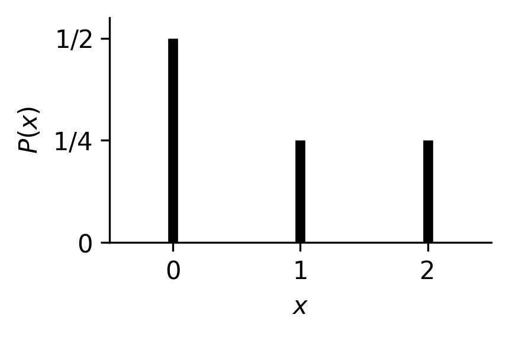
Fig. 5.2 An arbitrary probability mass function for a variable which may take on three values. These three possible values are denoted along the x-axis, with their corresponding probability of occurance along the y-axis. The bar height of each corresponds to its ‘likelihood’ of occurance when the variable \(x\) is sampled.#
Note that the expected value need not be present in the set of outcomes.
Example: Expected value and mean squared
Consider a scenario where random variable \(x\) can take values {0, 1, 2} with corresponding probabilities {\(\frac{1}{2}\), \(\frac{1}{4}\), \(\frac{1}{4}\)}. This distribution is visualised in figure 2.1. Calculate the expected value for
(a) the variable, \(\langle x \rangle\)
(b) the mean squared of the variable, \(\langle x^2 \rangle\).
(a)
First check that \(\sum P_i = 1\). Since \(\frac{1}{2} + \frac{1}{4} + \frac{1}{4} = 1\) we are good to go. We then calculate the averages as follows:
We see that the mean \(\langle x \rangle\) is not one of the possible values \(x\) can take.
(b)
We follow a similar process for \(\langle x^2 \rangle\):
Continuous distributions#
Let \(x\) now be a continuous random variable, meaning it can take any value within some range (the bounds may be finite or infinite). We must treat probabilities differently in this case. Imagine a uniform distribution between 1 and 10: one sample might give an exact value like 4, another could be something extremely specific like 3.14159265… Because there are infinitely many possible values, the probability of landing on any one exact value is effectively zero. Instead, we talk about the probability of \(x\) lying within a small interval of width \(dx\).
Many real-life quantities are described by continuous distributions. For example, height, commute durations, and local temperature all vary smoothly within finite limits, even if the exact value can be anything within the range. As before, the total probability must sum to one, but because we are now summing over a continuous range, we replace sums with integrals:
We have analogous expressions for \(\langle x \rangle\) and \(\langle x^2 \rangle\):
Continuous random variables are extremely common in thermal physics and statistical mechanics. For example particle speeds in a gas and particle energies in a classical system.
Uniform Distribution on [0, 10]
Let a continuous random variable \(x\) be uniformly distributed between 0 and 10:
What is the values of
(a) the expected value \(\langle x \rangle\)?
(b) the mean squared value \(\langle x^2 \rangle\)?
First, ensure that \(P(x)\) is a valid probability distribution by checking that it is normalised:
We can then compute the expected values:
(a)
(b)
The mean of 5 lies exactly halfway between the bounds, which is as you’d expected for a symmetric uniform distribution.
Measures of Central Tendencies#
When describing a probability distribution, we often want to identify simple central values which best represent the properties and sampling behaviour of a probability distribution. These are known as measures of central tendency, and the most common are the mean, median, and mode:
Mean ⟨x⟩: the expectation or average value of a distribution.
Median: the value that divides the distribution into two equal halves, i,e. the middle value.
Mode: the most probable value, where the probability is maximal.
For symmetric distributions (like the Gaussian), these three measures coincide onto the same value. For asymmetric or skewed distributions, they differ, and thus provide valuable information for characterising a distribution. Measures of central tendency, the mean, median and mode, each give us simple summary values which capture the typical behaviour of a distribution. In the context of thermal physics, these quantities help us understand concepts like average energies and particle speeds. They can also be useful in that they help us distinguish when system exhibit symmetric behaviour, as is the case when all three measures are in agreement, i.e. \(\text{mean} = \text{median} = \text{mode}\), or when they exhibit strong asymmetry.
{kind=link}
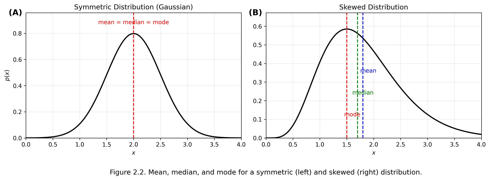
Fig. 5.3 (A) a symmetric distribution where the mean, mode and median correspond to the same value in the distribution’s domain, and (B) an asymmetric distribution (right) where, mode < median < mean. Distribution (B) demonstrates positive skew (the tail is heading in the positive direction) - were it negatively skewed, we would have mean < median < mode.#
While many distributions in thermodynamics are symmetric, like the Gaussian and Binomial distributions commonplace throughout physics, real physical scenarios can often produce asymmetrically distributed systems. For example, particle speeds in a gas, or waiting times between detection events are typically not symmetrically distributed about the mean. The skewed plot highlights how the mean, median and mode can differ significantly, and illustrates why we cannot rely on just one of these measures when interpreting asymmetrically distributed data. In skewed distributions, the mean is pulled towards the distribution’s tail, whilst the median moves between the mean and the mode. Regardless, the mode still represents the most probable value, i.e. it is situated at the peak of the distribution.
Variance#
The variance measures the average deviation of values around the mean of a distribution and is always positive. It is defined as follows:
We can expand the above expression to derive a simpler expression for calculating the variance of a scalar variable:
This manner of expressing the variance gives rise to a mnemonic expression with which you can memorise the formula: The variance is “the mean of the squares minus the square of the means.” The variance for a variable \(x\) is often denoted \(\sigma^2_x\), and relates to the standard deviation, which is simply the square root of the variance:
Expectation under a linear transformation#
Because the expectation operator \(\langle \cdot \rangle\) is linear, the mean of a transformed variable follows the transformation directly. Scaling random variable \(x\) by \(a\) and shifting by \(b\) means the average value is also scaled by \(a\) and shifted by \(b\):
A constant (i.e. \(b\)) merely contributes its own value to the expectation, and constant factors (i.e. \(a\)) simply pass through the expectation operator. The full process of calculating \(\langle y \rangle\) following its production through the linear transformation \(y = ax+b\) is as follows:
Variance under a linear transformation#
Variance behaves slightly differently. Shifting by \(b\) has no effect, because moving a distribution left or right does not change its spread. Scaling by \(a\) however does stretch/compress the distribution, manifesting as a squared scaling of the variance. For a variable \(x\) transformed linearly via \(y = a x + b\):
Starting with the standard definition of the variance:
and substituting \(y = a x + b\),
This is an important result generally, as whenever a quantity is converted or calibrated using a linear relation, its uncertainty scales by the square of that factor. We can see visually how linear transformations affect the shape of a distribution, and thus the population-level effects:
{kind=link}
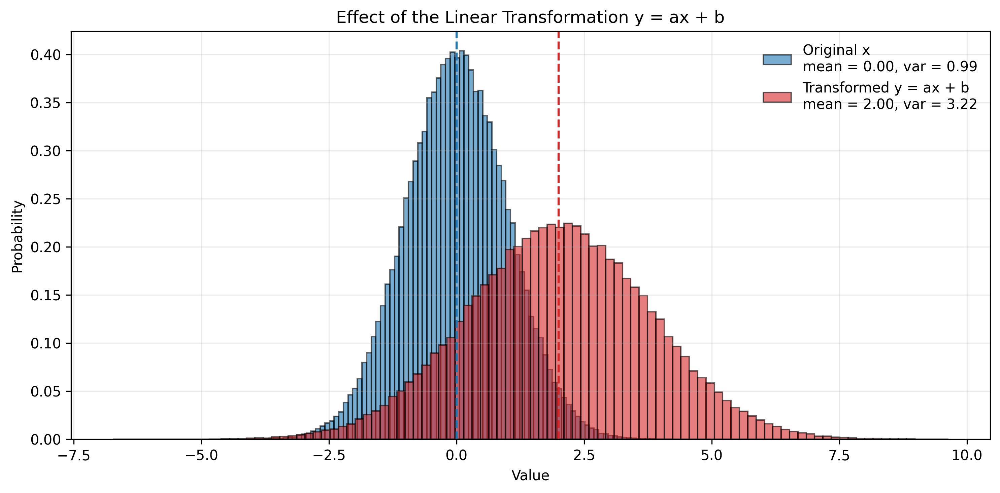
Fig. 5.4 A distribution before (blue) and after (red) undergoing a linear transformation. There are a myriad of situations for which this can apply. Injecting more energy into the system (e.g. by heating it) will shift the mean energy of the population, but also broaden the variety of energies exhibited.#
Independent Variables in Probability#
In many physical problems we work with more than one random variable. For example, a molecule has both a position and a velocity, and repeated measurements of the same quantity each produce different outcomes. Sometimes these variables are independent, meaning that knowing the value of one does not provide any information about the other. A simple example is coin tossing: knowing the result of one flip does not influence the next.
Formally, two random variables \(u\) and \(v\) are independent if their joint probability distribution factorises into a product series of each variable’s marginal distribution:
If this holds, the value observed for \(u\) has no bearing on \(v\), and vice versa. This generalises to any number of independent variables. If \(\vec{x} = (x_1, x_2, \ldots, x_N)\) has each component independent of the other, then
A very useful consequence of independence is that the expectation of a product factorises:
The same reasoning extends directly to \(N\) independent variables:
This result holds for discrete variables as well: simply replace the integrals within the series with sums.
The Binomial Distribution#
Refer to chapter 1 for a refresher on combinatorial problems. Combinations appear frequently throughout probability theory because it is used to count how many different sequences can contain k particular outcomes (like successes) among n trials.
Consider an experiment with only two possible outcomes, success and failure. This is called a Bernoulli trial.
Let the probability of success be p.
Then the probability of failure is (1 − p).
If we assign the value 1 to a success and 0 to a failure, the expectation and variance of a single trial are:
Now imagine performing \(n\) independent Bernoulli trials; for example, flipping a coin \(n\) times where we count \(k\) heads. Let us consider “heads” as a success.
There are two ingredients to the probability of obtaining k successes:
The probability of one specific sequence with k successes and n − k failures:
The number of possible sequences with exactly k successes:
Multiplying these gives the binomial probability of observing k successes given n trials:
Properties of the Binomial Distribution#
From the definition, one can show that the probability of all combinations of successes and failures sums to unity:
so the probabilities are properly normalized. The mean and variance of k are:
As n increases, both the mean and standard deviation grow, but the fractional width
decreases, meaning the distribution becomes more sharply peaked around k = np.
{kind=link}
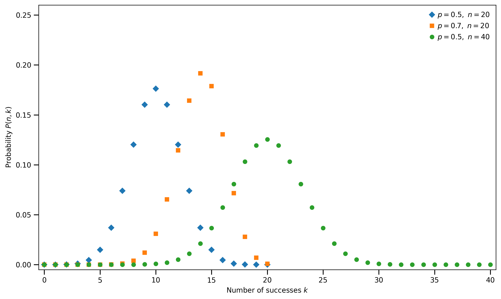
Fig. 5.5 Plot of possible binomial distributions with varied trial sizes and success probabilities.#
Example - coin tossing
For a fair coin, \(p = \frac{1}{2}\).
For 16 tosses, expected heads: \(\langle k \rangle = 8\); \(\sigma = 2\).
For \(10^{20}\) tosses, expected heads: \(\langle k \rangle = 5\times10^{19}\); \(\sigma = 5\times10^{9}\) - ten orders of magnitude smaller relative to the mean.
Thus, as the number of trials increases, the relative fluctuations around the mean gradually become negligible.
Example: 1D random walk
A one-dimensional random walk can be viewed as successive Bernoulli trials: each step is either forward (+L) or backward (−L) with equal probability \(p = \frac{1}{2}\).
After n steps, if k are forward, the net displacement is
Using the binomial results,
showing that the root-mean-square displacement grows as \(\sqrt{n}\) - a key result that later links to Brownian motion.
5.4. Probability Examples#
The Birthday Paradox#
In a group of N people, what is the probability that at least two of them share the same birthday? We denote this probability as \(P(\text{match})\). The complementary probability — that no one shares a birthday — is \(P(\text{no match})\), and clearly:
It’s usually easier to calculate the complementary case first.
In the standard formulation of the birthday problem, we assume that birthdays are independent and uniformly distributed across the 365 days of the year, and that there are no instances of sampling bias, and that leap years do not exist.
If there are N people in the group and no one shares a birthday:
The first person can have any of 365 birthdays.
The second must have a different one - 364 options.
The third must avoid the first two - 363 options.
And so on…
Therefore, we have:
which we can express compactly using factorials as:
Finally, the probability that at least one shared birthday occurs in the group is:
Let’s now graph this probability as a function of N to see how quickly it rises.
{kind=link}
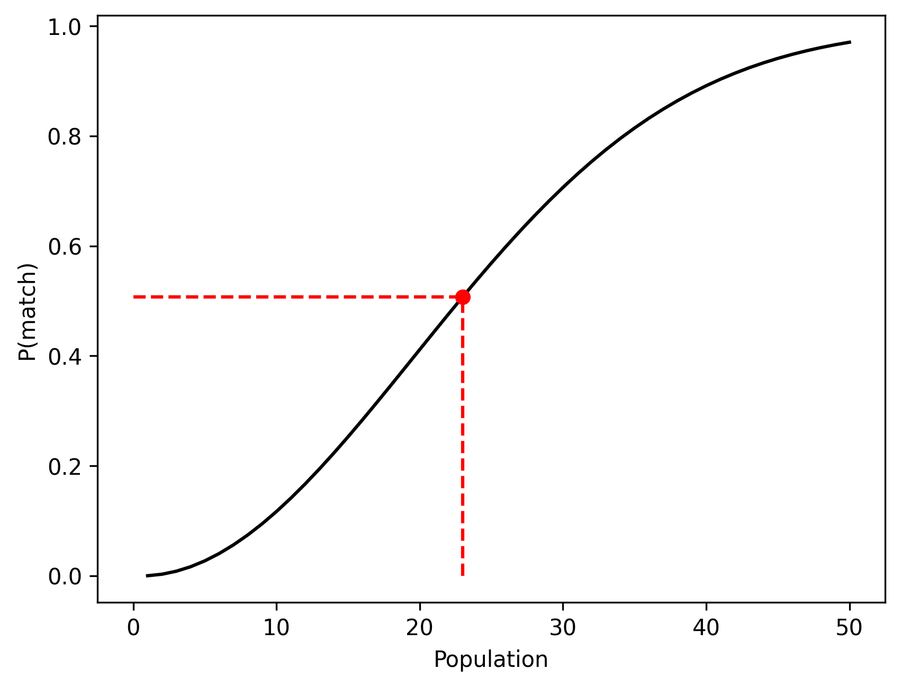
Fig. 5.6 The probability trace of at least one pair of identical birthdays occuring as a function of the population. We observe that the probability of this happening hits ~50% once we have 23 people gathered, and asymtotes to a certain event once we surpass 50 people. The number of pairs grows faster than the population, leading to a sharp increase in the probability of a pair of matching birthdays despite the population being well below 365.#
Finding a Particular Pokémon#
You find yourself in the Sinnoh region, scouring for a particular Pokémon. You tell your accompanying friend that the probability of finding the Pokémon you seek per searching instance is \(\frac{1}{n}\), to which they reply that, on average, you need only search \(n\) times to find your quarry. Intuitively that sounds sensible, but is it true?
What is the probability of success based on her logic? The probability of finding the Pokémon on your first try is:
so naturally the probability of not finding the Pokémon on the first attempt is:
We presume to think that each searching instance is independent. Your previous efforts have no bearing on future success. Henceforth, the probability of failing to find the right Pokémon after \(n\) attempts is:
meaning the probability of success by the \(n^{th}\) attempt is merely 1 minus this probability:
Let’s now graph this probability equation as a function of n:
{kind=link}
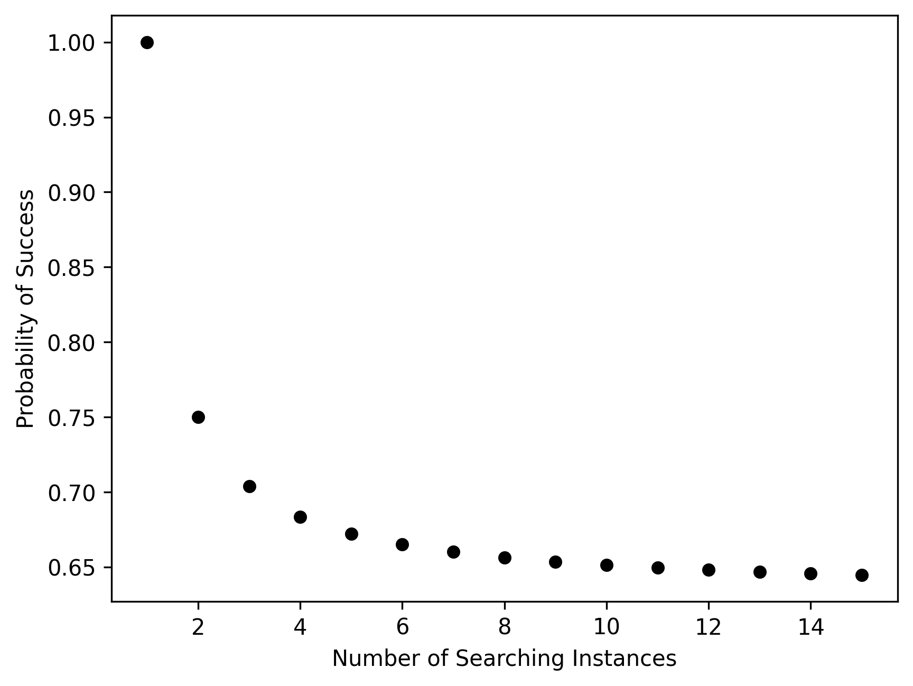
Fig. 5.7 The probability of at least one success after \(n\) independent attempt, when each attempt succeeds with probability \(\tfrac{1}{n}\). As \(n\) increases, this probability approaches \(1 - \tfrac{1}{e} \approx 0.632\). This is a general trend that can be applied to any scenario in the limit of repeated independent failure. By definition, when \(n=1\), the probability of success is \(\tfrac{1}{1} = 1\), so we are certain to succeed on the first attempt.#
As \(n\) gets larger, the probability of finding the Pokémon you are after steadily converges to a constant value of ~0.632. So to be certain you’ll find your Pokémon you’ll need to search more than n times. Although graphing it helps with intuition, we can discern a more accurate result by taking the limit of the probability function with respect to \(n\):
This is the consequence of a special case where we have a probability of success as being one over the number of trials. Be careful: we are increasing the rarity of the Pokémon alongside the number of attempts we make, which is why the probability does not tend to infinity as we increase the number of attempts. We don’t see this same convergence when the number of trials doesn’t match the denominator.
Let us consider flipping a coin 10 times, and managing to land 10 heads in a row. The probability of this happening is:
So what is the probability of getting 10 in a row after 1024 tries? Bearing in mind that each trial is 10 coin flips…
and if we were to try two thousand times?
In summary, when the probability of success for an individual trial is \(\frac{1}{n}\), the probability of success after \(m\) tries is:
5.5. Clausius Entropy#
Here we will introduce the macroscopic definition of entropy known as the Clausius definition.
Consider a system undergoing an infinitesimal expansion of an ideal gas.
Add heat \(\text{d}Q\) and let the system expand so that the temperature \(T\) remains constant.
Because gas expansion results in a larger accessible space, \( \frac{dV}{V} \) is related to the rate of possible positions, and therefore a measure of “randomness”:
Definition
Entropy = \( \text{d}S=\frac{\text{d}Q}{\text{d}T} \ \text{[J / K]} \)
where the final equality only holds for an infinitesimal reversible process.
Now let us consider the two following cases:
Case 1, \([Q / T]\) is large (\(T\) is small): adding heat to a cold system \(\to\) significant rise in molecular motion and therefore increases “randomness” of molecules
Case 2, \([Q / T]\) is small (\(T\) is large): add heat to a hot system \(\to\) far less noticeable rise in molecular motion.
The above definition only applies to isothermal processes, generally entropy change can be defined for any reversible process as:
where \(\Delta S\) is the entropy change in a reversible process,
\(dQ\) is an infinitesimal heat flow in to the system,
and \(T\) is the absolute temperature.
NB: entropy calculations depend on current system state, not on its past history. So we use \(\Delta S = S_2 - S_1 \) as it is not path dependent.
Entropy change in a temperature change
10 kg of water at 0°C is heated to 100°C, compute the change in entropy. Assume the specific heat of water is constant with \(c = 4190\) J kg\(^{-1}\) K\(^{-1}\) over this temperature range.
The entropy change depends only on the initial and final states of the system, whether the process is reversible or irreversible.
Imagine a reversible process where the temperature is increased in infinitesimal steps d\(T\).
Using \( dS = \text{d}Q_\text{rev} / T \), each infinitesimal (reversible) step has:
This problem may be attempted without using an integral, i.e. through \( \Delta S = Q / T \), but this would be wrong as this formula requires that the process be isothermal. The only way to find the change in entropy due to a change in temperature involves evaluating an integral.
Let us see what happens when we tackle the isothermal free gas expansion problem encountered in Statistical form of entropy with the Clausius definition of entropy.
Example
Consider the isothermal free expansion of a gas from \(V_1 \to V_2 = 2 V_1 \). What is the entropy change in this process?
As the system is insulated (isothermal),
For an ideal gas, this implies \(\Delta T = 0\).
To calculate the entropy change, we evaluate a reversible path between the same initial and final states:
For an isothermal reversible expansion:
Using \(p = \frac{nRT}{V}\):
I.e., we get the same change in entropy regardless of whether we use
as the definitions.
5.6. Entropy Changes#
Let us consider the change of entropy for two cases: thermal conduction and calorimetric processes.
Thermal Conduction#
Consider two reservoirs: one is hot, with temperature \(T_H\), and one cold with temperature \(T_C\).
Heat \(Q\) flows from the hot reservoir to the cold reservoir, though both reservoirs remain at constant temperatures \(T_H\) and \(T_C\) respectively, as they have large heat capacities.
{kind=link}
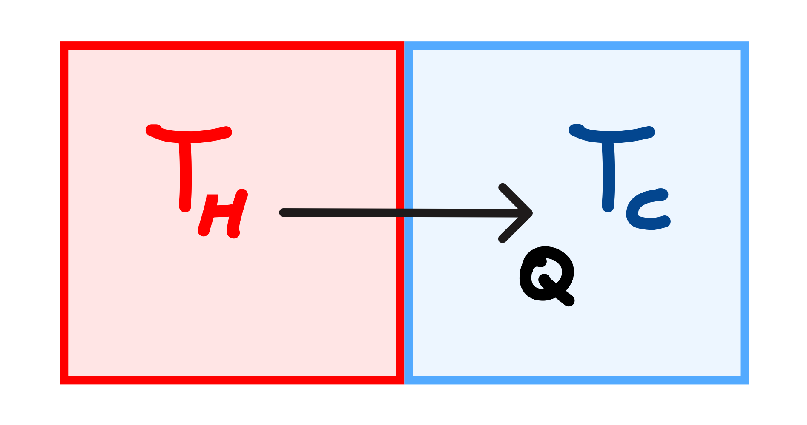
Fig. 5.8 Heat transfer between two reservoirs. \(Q\) is transferred from \(T_H\) to \(T_C\), though after some time, the reservoirs still remain with temperatures \(T_H\) and \(T_C\) due to their large heat capacities.#
The total entropy change is
Since \(T_h > T_c\), the quantity in brackets is positive, so
Calorimetric Processes#
Two bodies initially at temperatures \(T_H\) and \(T_C\) are brought into thermal contact and reach a common final temperature \(T_f\).
{kind=link}
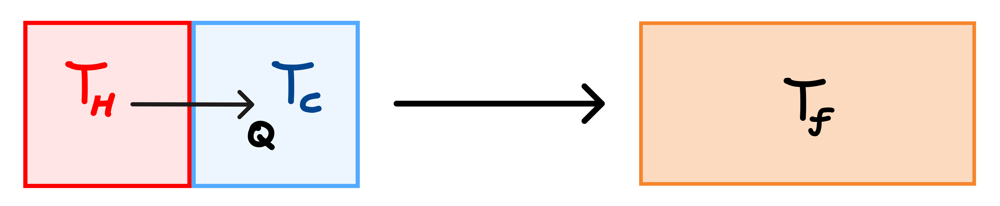
Fig. 5.9 Heat transfer between two reservoirs. \(Q\) is transferred from \(T_H\) to \(T_C\) and after some time the reservoirs reach the same temperature \(T_f\).#
The total entropy change is
The temperature cannot be taken outside the integral because it changes during the process. We will substitute \(\text{d}Q=cm\text{d}T\):
If \(T_H > T_f\), then \( \ln\left(\frac{T_f}{T_H}\right) < 0 \),
If \(T_C < T_f\), then \( \ln\left(\frac{T_f}{T_C}\right) > 0 \).
Now let’s do an example to see what happens to the total entropy of this process.
Example
We have equal masses of water at \(0^\circ\)C and \(100^\circ\)C. We combine them and set a final temperature of \(T_f = 50^\circ\)C. What is the entropy change for this process?
Solution: Let’s first convert to Kelvin:
With \(m_H = m_C = m\) and \(c_H = c_C = c\):
Thus,
This shows that heat flow from higher to lower temperature is a natural process, and that it is irreversible. The entropy of the higher temperature object decreases, but the colder object increases, and the net total must always increase.
5.7. The Second Law of Thermodynamics#
In a natural irreversible process, like heat flow from a hot to cold object, we see that the net entropy increases. In a reversible process (not a typical process) the increase of entropy in the cold object and decrease of entropy of the hot object are equal. Therefore the net entropy is zero. We can then define thr “entropy statement” of the 2nd law of thermodynamics:
2nd Law of Thermodynamics
No process is possible in which the total entropy decreases, when all systems that take part in the process are included.
The entropy of an isolated system will increase of remain constant over time.
Intuitive Picture#
The second law of thermodynamics is that the entropy of a closed system will increase or remain constant with time.
This means that heat always flows from systems with higher temperatures to ones with lower temperatures.
{kind=link}
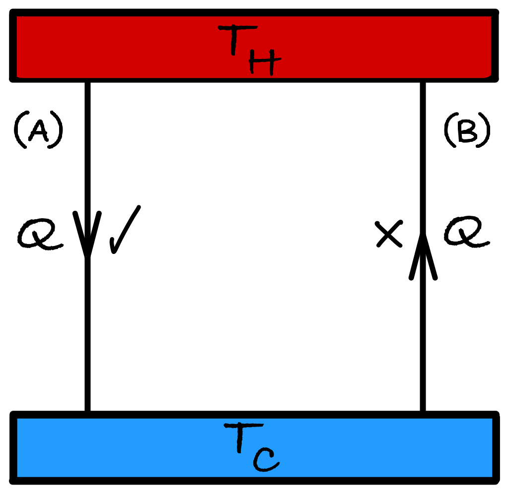
Fig. 5.10 Two thermal bodies with temperatures \(T_H\) and \(T_C\) are transferring heat \(Q\). Case (A) depicts heat transfer from \(T_H\) to \(T_C\), and case (B) depicts transfer from \(T_C\) to \(T_H\). We know case (B) is not allowed, but can we prove it?#
Let’s calculate \(\Delta S\) for cases (A) and (B) in figure Two thermal bodies with temperatures T_H and T_C are transferring heat Q. Case (A) depicts heat transfer from T_H to T_C, and case (B) depicts transfer from T_C to T_H. We know case (B) is not allowed, but can we prove it?.
\(T_H = 100^\circ\) C
\(T_C = 0^\circ\) C
Case A: heat flow from \(T_H \to T_C\)
\[\begin{split} \begin{aligned} \Delta S &= \Delta S_H + \Delta S_C \\ &= \frac{-Q}{T_H} + \frac{Q}{T_C} \\ &= Q\left(\frac{1}{T_C} - \frac{1}{T_H}\right) \\ \Delta S &> 0 \qquad (\text{since } T_H > T_C) \\ \to \ \ \text{process is allowed } & \text{as it does not violate the 2nd law}. \end{aligned} \end{split}\]Case B: heat flow from \(T_C \to T_H\)
\[\begin{split} \begin{aligned} \Delta S &= \Delta S_H + \Delta S_C \\ &= \frac{Q}{T_H} - \frac{Q}{T_C} \\ &= Q\left(\frac{1}{T_H} - \frac{1}{T_C}\right) \\ \Delta S &< 0 \qquad (\text{since }T_C < T_H) \\ \to \ \ \text{process is not } & \text{allowed as it violates the 2nd law}. \end{aligned} \end{split}\]
Other definitions of the Second Law#
There are two other definitions of the second law: the Clausius and Kelvin statements.
Clausius Statement
No process is possible whose sole result is the transfer of heat from a colder to a hotter body.
The Clausius statement describes normal, irreversible processes as heat is always able to flow from a hot to cold body and the reverse process is never able in isolation. This process of heat transfer is also related to the increase of the entropy of the system, connecting it to the entropy statement of the second alw.
The second law can also be stated in a third way concering how easy it is to change between forms of energy. For example, the ease of conversion of work into heat give the Kelvin statement:
Kelvin Statement
No process is possible whose sole result is the complete conversion of heat into work.
The Kelvin statement makes clear that there are limits to the availability of energy and the ways it can be converted. It also implies that it is impossible to build a 100% thermally efficient heat engine. We will explore this in Heat engines, and the equivalency of the Kelvin and Clausius statements.
5.8. Entropy Change in Supercooling Liquids#
Consider a bottle of purified water, cooled to \(-10 ^\circ\) C such that it does not solidify into ice (as there are no nucleation sites). When the bottle is taken out and exposed to room temperature (\(20 ^\circ\) C), the water remains liquid at \(-10 ^\circ\) C. We can then induce crystallization of the water into ice by creating a nucleation site, for example by slamming the bottle onto a surface, thereby releasing the latent heat of fusion into the environment.
{kind=link}
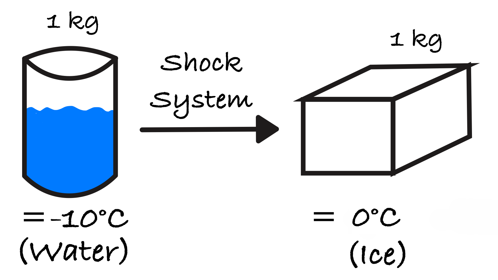
What is the change in entropy of this process? Please note that the environment acts as a heat sink.
where \(\Delta S_\text{water/ice}\) represents the entropy change due to the phase change between water and ice
and \(\Delta S_\text{environment}\) represents the entropy change due to heat released to the environment.
As \(\Delta S < 0\), this violates the second law of thermodynamics.
This calculation incorrectly assumes that latent heat is released at 263 K and transferred directly to an environment at 293 K. In reality, when crystallization begins in supercooled water, the release of latent heat rapidly raises the system temperature to the melting point (273 K). As a result, the phase change occurs at 273 K, and heat exchange with the surroundings takes place in the immediate surroundings at this temperature.
To calculate the entropy change correctly, a reversible path must be constructed. This path must have an initial state: liquid at \(263 \ \mathrm{K}\), and final state: solid at \(263 \ \mathrm{K}\). Consider the following construction:
Heat liquid \(263 \rightarrow 273 \ \mathrm{K} \to \Delta S_1 \), due to heat release from the supercooling phase transition
Freeze at \(273 \ \mathrm{K} \to \Delta S_2 \)
Cool solid \(273 \rightarrow 263 \ \mathrm{K} \to \Delta S_3 \)
such that \(\Delta S_\text{total} = \Delta S_1 + \Delta S_2 + \Delta S_3 \). This path does not represent the real process. It is chosen so that all heat transfers occur reversibly, allowing use of
\(\,\)
(1) Heat liquid 263 → 273 K#
System entropy change:
Environment entropy change:
Total for step (1):
\(\,\)
(2) Freeze at 273 K#
As in the usual case, a bottle of water placed in a freezer until it solidifies into ice. We can calculate the heat generated during this phase transition as
This is the heat released into the environment, but what about the entropy changes? System entropy:
Environment entropy change:
Total for step (2):
\(\,\)
(3) Cool solid 273 → 263 K#
System entropy change:
Environment entropy change:
Total for step (3):
\(\,\)
Total entropy change#
The Second Law is satisfied.
5.9. The Third Law of Thermodynamics#
The 3rd Law of Thermodynamics
Francis Simon (1893 - 1956): “Contribution to the entropy of a system by each aspect of the system in internal thermodynamic equilibrium tends to zero as \(T \to 0.\)”
Or alternatively, “the entropy of a perfect crystal at absolute zero is exactly equal to zero”. Can measure changes in entropy \(\Delta S\), but the 3rd law gives us a data point for \(S\) at \(T=0\) - that is, \(S(T \to 0) \to 0\).
Using the Boltzmann entropy, we can calculate the number of microstates:
At 0 K, the entropy is 0 J/K, this means that
meaning there is only one possible state for the system to be in, and each atom is frozen in its lowest energy state (ground state).
Note that the consequences of the third law is that the heat capacity tends to 0 as the \( T \to 0 \).
at \( T \to 0, \ln T \to \infty, S \to 0\) hence \(c \to 0 \). The result that \( c = 0 \) disagrees with the equipartition theorem in Section 3.3 where \(c = \frac{R}{2}\) per mole per degree of freedom, but that’s because the equipartition function is a high temperature theorem, and is invalid for low temperatures.
What is the outcome of the 3rd law?#
One outcome of the third law is that absolute zero is unattainable in a finite number of steps (and is messy to prove).
{kind=link}
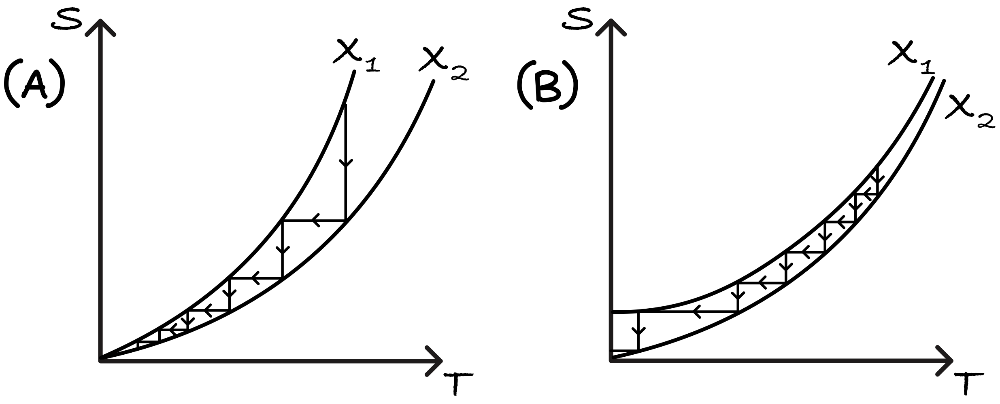
Fig. 5.11 Entropy curves \(X\) as a function of temperature. In (1), curves \(X_1\) and \(X_2\) are sufficiently separated that it is possible to alternate between adiabatic and isothermal processes such that a finite number of steps may result in \(T=0\). In (2), it is impossible to reach absolute zero if the third law is obeyed.#
Let us denote parameters describing the state of the system with \(X\). Consider two cases:
Case 1, \( S(T \to 0) \geq 0 \). Here, the third law is not obeyed for all systems.
Case 2, \( S(T \to 0) \to 0 \). Here, the third law is obeyed.
The procedure for proving this is as follows:
Transitions from \(X_1 \to X_2\) are an isothermal increase in \(X\) (cooling). Transitions from \(X_2 \to X_1\) are an adiabatic decrease in \(X\).
From Fig. 5.11, it is clear that it is possible to cool to \( T=0K \) okay with having a finite number of steps. For case 2, it is clear that it will take an infinite number of steps to reach 0 K as both curves in Fig. 5.11 satisfy the third law as both \(X_1\) and \(X_2\) curves are arbitrarily close as \(T \to 0\) K.